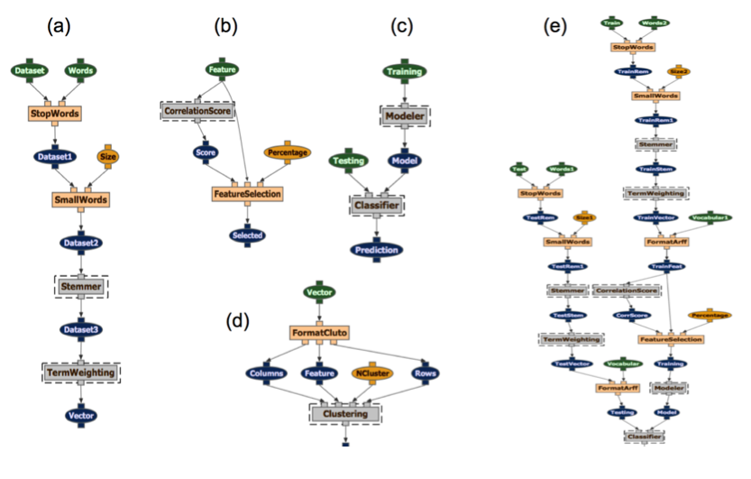

|
|

|
| Data Analytics by Learning and Exploration | |
Description
DALE (Data Analytics by Learning and Exploration) is a framework that captures expert-level data analysis methods in data mining and machine learning as computational workflows. This system exposes end users to workflows of well-understood end-to-end data analysis processes that represent the state-of-the-art and have proven successful in several challenging domains. DALE, as an extension of the Wings workflow system, allows users to easily experiment with different combinations of steps, represented as workflows of computations that they can easily reconfigure and that the underlying system can easily manage and execute. DALE workflows capture expertise on using supervised and unsupervised statistical learning algorithms, as they reflect state-of-the art methods to prepare data, extract features, down-select features, and train models of the data. The diagram below shows workflow fragments for (a) Feature generation, (b) Feature selection with correlation scoring, (c) Training a model to classify a test dataset, (d) Clustering of documents with label information. These workflow fragments are combined into larger workflows, such as the workflow for document classification shown in (e). 